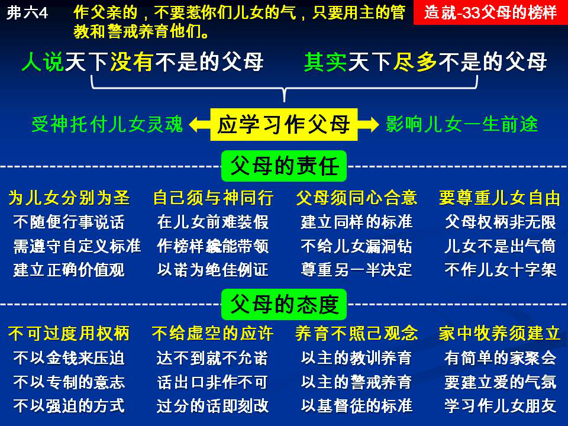

诗歌：444首、304首
重要经文：
以弗所书六章四节：作父亲的，不要惹你们儿女的气，只要用主的管教和警戒养育他们。
歌罗西书三章二十一节：作父亲的，不要惹你们儿女的气，免得他们灰心丧志。
提摩太后书一章五节：记得你里面无伪的信心，就是先在你外祖母罗以，和你母亲友尼基里面的，我深信也在你里面。
纲目要点：
壹 父母的责任：
一 不能随便行事说话。
二 必须与神同行。
三 父母必须维持同心合意。
四 要尊重儿女的人格自由：
１ 父母没有无限的权柄。
２ 儿女不是父母的出气筒。
３ 不要作儿女的十字架。
贰 父母的态度：
一 不能过度的用你的权柄。
二 不该给虚空的应许，过分的话马上更正。
三 以主的教训和警戒来养育儿女。
四 早晚各一次家庭聚会。
五 家庭里的空气该是爱。
信息选读：
作父母不是容易的事
人都是以为，人应该学习怎样作儿女。虽然也有这一个教训，但话相当轻。以弗所六章和歌罗西三章，对于父母的话比对于儿女的话更重，因为神注意父母过于注意儿女。所以，人应当学习怎样作父母。把圣经的话集中起来，乃是说，作父母的人应当以主的教训和警戒来养育儿女；不要使儿女失去他们的志气，不要惹他们的气。意思就是父母要约束自己，不随便。这是保罗所给我们看见的。所以，作父母更是不容易的事。作父母，乃是下一代的儿女能够带到什么地步，责任都在父母的身上。神将人的灵魂交在我们手中，神将人的一生交在我们手中，神将人的前途交在我们手中。没有一个人影响一个人的前途，像父母影响儿女一样。
不能随便行事说话
照样，所有有儿女的人，也都必须为着自己的儿女分别为圣。这意思就是说，按着我们自己，本来有许多事情可以随便作；今天为着儿女的缘故，不能随便作。有许多的话，本来可以随便说，今天为着儿女的缘故，不能随便说。所以，从那一天有儿女来到我们家里起，我们就得分别为圣。你如果不能约束你自己，你就不能约束你的儿女。请记得，许多的事情，没有儿女的人，他的自由至多是妨害他一个人而已。有儿女的人，他的自由，就破坏了他自己和他的儿女。所以一个基督徒自从有了儿女之后，就得自己分别为圣。因为今天在你家里有两只眼睛或者四只眼睛，一直在看着你；这两只眼睛或者四只眼睛要看你一生一世。你虽然离开了世界，他所看见的还不会忘记，还要留在他里面。
你的儿女出生的那一天，就是你奉献的那一天
所以，当你的儿女出生的那一天，就是你奉献的那一天。你在道德上，要替自己定规一个标准。你在家庭行为上，要替自己定规一个标准。你在人生的是非上，要替自己定规一个标准。你在高尚的理想上，要替自己定规一个标准。你在属灵的事情上，要替自己定规一个标准。你自己必须严格的按着这些标准去行。不然的话，不只你自己出事情，马上也把你的儿女带坏了。许多的儿女坏了，不是别人带坏的，乃是自己的父母带坏的。父母缺少道德的标准，父母缺少理想的标准，父母缺少属灵的标准，就把儿女带坏了。儿女对于一件事的断定，是学你的断定。儿女对于一件事的估价，是学你的估价。所以，所有的父母都得记得，我今天的举动，一直要继续在我的儿女身上，不会停止。你没有儿女的时候，你高兴，什么都可以作；你忧愁，什么都可以摔在一边。你有了儿女之后，你的自己要受限制。你高兴的时候得按着最高的标准而行；你不高兴的时候，也得按着最高的标准而行。所以，盼望每一对的夫妻，当他们有了儿女的时候，应该重新把自己奉献给神，重新到主面前来把自己奉献给主。有许多的工作，和人订了合同，是作一年，作两年；但是这一个工作是一生的，是没有日期的限制的。
要有受托的感觉
我想，没有一种人的失败，比作父母的失败更大。作事业的失败，没有作父母的失败大。作夫妻的失败，也没有作父母的失败大。因为作夫妻，每个人还能保护他自己，因为他娶她，或她嫁他，都已经是二十岁或二十多岁的人。一个小孩交在你的手里，他不能保护自己。主把小孩子托给你，你不能到主面前去说，你托给我五个，我丢了三个。你托给我十个，我丢了八个。你们原谅我说这一句话。在召会这么多年之中，基督徒的第一个失败，就是在作父母上。因为这是没有人管的事。对方那么小交在你手里，他不能作什么。你是相当放松的对待你自己，你也会相当的放松的对待他。所以，我们要看见，作父母必须约束自己，作父母必须把自己的自由丢掉；不然，神把人的身体和灵魂交在你的手里，将来你没有法子见你的神。
要尊重儿女的人格自由
没有一个人能够说，我的儿女是我的。以为儿女绝对是我的，以为儿女一切的事都可随我无穷的意志来支配，都可随我专制的意志来支配，一直到他成人为止。许多人作了基督徒之后，还是有天下没有不是的父母的思想。请你们记得，天下尽多不是的父母。错，许多时候是在父母身上。所以，千万不要把异教的思想摆在自己身上，以为你有无限的权柄，可以支配你的儿女。
儿女不是父母的出气筒
我看见太多作父母的人，这一边看着儿女大声责骂，马上又转过脸来对我说，倪先生，这一碗东西很好吃。但我吃不下去。两分钟的事，这一边骂孩子，那一边说，倪先生，请吃。难处是在这里：有的父母看儿女好像是他们合法的出气筒。神绝没有把孩子所有的自尊心都抹煞，神绝没有把孩子们所有的自由都抹煞。神绝没有把孩子们所有的独立人格都抹煞，把他们摆在你手里，任你打，任你骂。没有这件事。
家庭里的空气该是爱
许多的儿女，到年长的时候和人共处不来，乃是因为在家庭里缺少爱的情形。家庭里都是吵，都是闹，都是打的声音，这些儿女到大的时候，就都是反常的。如果一个人小的时候，家庭是这种的情形，到大的时候，就自然而然落落寡交。社会上有许多难对付的人，像土匪，像造反的人，都是因为小时候在家庭里没有摸着爱。这样的人，到召会里面来，就有许多难处。作父母的人，必须学习作儿女的朋友。你们千万不要让儿女和你好像很生疏，不会接近你。请你记得，朋友是交出来的，不是生出来的。你们必须学习和你的儿女接近，欢喜帮助他，让他们有难处的时候、成功的时候，都能够来告诉你，才是好的朋友，就是容易接近的人，容易请求的人。软弱的时候能寻你，成功的时候能告诉你。我们要和他们像作朋友一样，让他们软弱的时候能够来寻我们，我们能帮助他。不是坐在宝座上审判，乃是帮助。 （摘自初信造就第三十三篇）
课程复习：
一 为什么作父母更是不容易的事呢？
二 为什么为着儿女的缘故，作父母的有许多事情不可以随便？
三 为何当孩子出生的那一天，就是作父母奉献，按着标准行的那一天？
四 为什么儿女不是父母的出气筒？
五 『朋友是交出来的，不是生出来的』 ，如何能与儿女无话不谈呢？
辅助图表：
